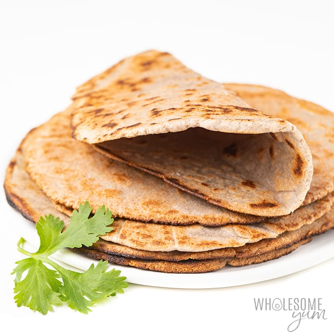

Low carb tacos

Low carb taco shells are made exactly as the Keto Pizza crust.
Ingredients needed
- Almond flour
- Shredded mozarella cheese
- Parchment paper
Steps
- Measure 3/4 of almond flour and one cup of mozarella cheese and mix into bowl
- microwave for 30 seconds, take out and mix and back in for another 30 seconds
- mix and knead into a dough bug this time into smaller flat pieces
- preheat oven to 400 degrees
- place parchment paper over a pan and place your flat tacos on the sheet and place in oven for 10 minutes
- upon taking them out of the oven, hang them folden on a wire wrap to cool and harden into a taco shape.